Per feature: the image · its duotone · the opponent pair · gradient through the image · pure pair gradient · mesh as CSS radial gradients. Classes and custom properties are in colorways.css, duotone filters in filters.svg.
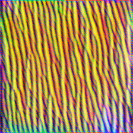
yellow / purple · 148° apart · axis explains 80% of chroma · duotone #583075 → #e7e248
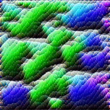
green / purple · 169° apart · axis explains 98% of chroma · duotone #2c15cc → #5bfc4c
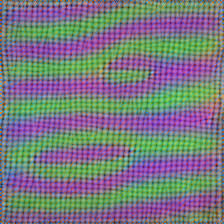
green / purple · 179° apart · axis explains 97% of chroma · duotone #642281 → #a3f092
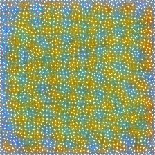
yellow / blue · 166° apart · axis explains 90% of chroma · duotone #1e4562 → #f6dc69
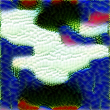
green / purple · 173° apart · axis explains 88% of chroma · duotone #0c1896 → #bdea9e
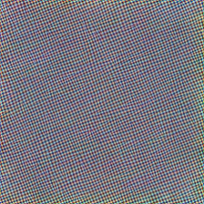
yellow / blue · 173° apart · axis explains 60% of chroma · duotone #3d4157 → #e1ddce
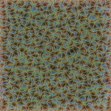
yellow / blue · 177° apart · axis explains 68% of chroma · duotone #523f1e → #d0def1
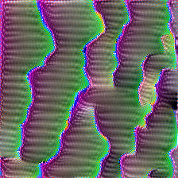
green / purple · 179° apart · axis explains 95% of chroma · duotone #6d0f8c → #8bf489
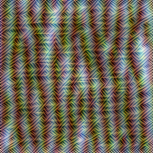
yellow / blue · 171° apart · axis explains 60% of chroma · duotone #474407 → #d9dbf7
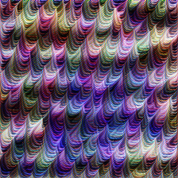
yellow / purple · 161° apart · axis explains 85% of chroma · duotone #4e2c90 → #dee0b7
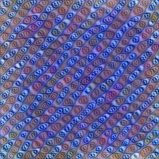
red / purple · 77° apart · axis explains 88% of chroma · duotone #1c389c → #ead9da
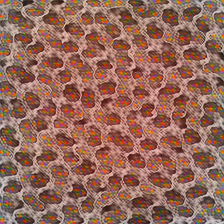
red / orange · 49° apart · axis explains 72% of chroma · duotone #772800 → #e8d9dc
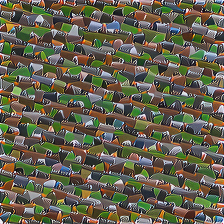
green / blue · 156° apart · axis explains 69% of chroma · duotone #174d00 → #d9dcf2
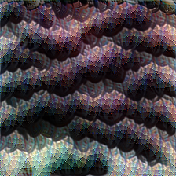
green / red · 173° apart · axis explains 66% of chroma · duotone #5c3749 → #c5e4d4
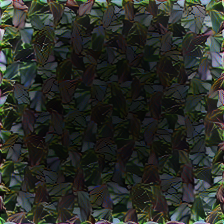
green / purple · 174° apart · axis explains 82% of chroma · duotone #43404e → #cfe4b4
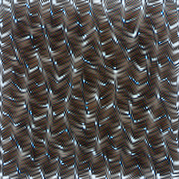
orange / blue · 175° apart · axis explains 84% of chroma · duotone #4b3b2f → #c9e0f2
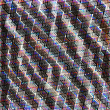
yellow / purple · 129° apart · axis explains 65% of chroma · duotone #473972 → #eed9c5
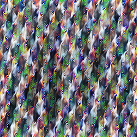
green / purple · 172° apart · axis explains 73% of chroma · duotone #4a396e → #bbeaa4
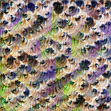
green / purple · 168° apart · axis explains 84% of chroma · duotone #483a6a → #d7e48e
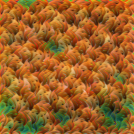
orange / green · 83° apart · axis explains 84% of chroma · duotone #204b1a → #ffbd78
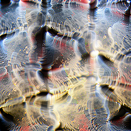
yellow / blue · 170° apart · axis explains 86% of chroma · duotone #2a4364 → #f9d8a1
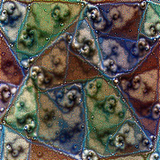
green / purple · 175° apart · axis explains 63% of chroma · duotone #373e65 → #d8e2aa
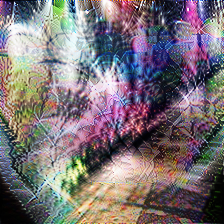
green / purple · 167° apart · axis explains 73% of chroma · duotone #553175 → #d2e4a4
orange / blue · 180° apart · axis explains 80% of chroma · duotone #19475a → #ffc36b
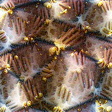
yellow / blue · 164° apart · axis explains 78% of chroma · duotone #3c4252 → #ffd68b
yellow / purple · 153° apart · axis explains 74% of chroma · duotone #3b3a7e → #f2db9e
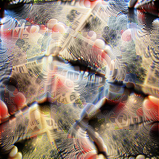
orange / blue · 140° apart · axis explains 71% of chroma · duotone #34425d → #ffcb9c
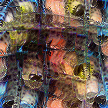
yellow / blue · 160° apart · axis explains 74% of chroma · duotone #1d446e → #ffd28d
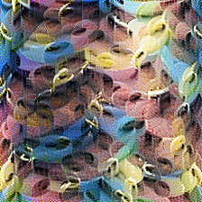
yellow / blue · 177° apart · axis explains 70% of chroma · duotone #144472 → #eedd91
yellow / purple · 162° apart · axis explains 75% of chroma · duotone #2f3e7c → #f1dc97
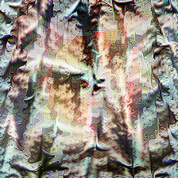
orange / blue · 165° apart · axis explains 61% of chroma · duotone #354452 → #ffd3ac
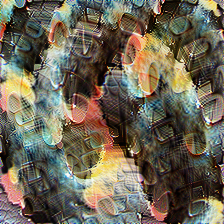
yellow / cyan · 155° apart · axis explains 70% of chroma · duotone #254751 → #ffd28d
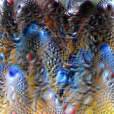
yellow / blue · 160° apart · axis explains 90% of chroma · duotone #004286 → #fed794
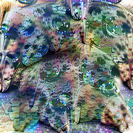
green / purple · 172° apart · axis explains 73% of chroma · duotone #313f75 → #d5e3a9
yellow / purple · 146° apart · axis explains 66% of chroma · duotone #413e65 → #f6d9a7
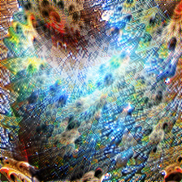
orange / blue · 161° apart · axis explains 74% of chroma · duotone #663600 → #a9e1ff
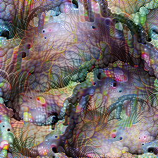
yellow / purple · 159° apart · axis explains 66% of chroma · duotone #4d3a5f → #dee1aa
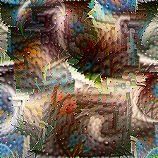
orange / blue · 170° apart · axis explains 67% of chroma · duotone #69340f → #bfe2f8
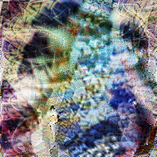
yellow / purple · 175° apart · axis explains 74% of chroma · duotone #313d7c → #e0e0a6
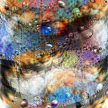
orange / blue · 149° apart · axis explains 78% of chroma · duotone #0c437a → #ffce8a
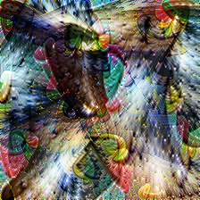
yellow / blue · 168° apart · axis explains 65% of chroma · duotone #304267 → #fbda83
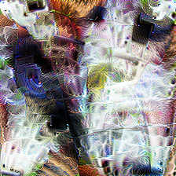
yellow / purple · 149° apart · axis explains 65% of chroma · duotone #3f3d6b → #f9d99a
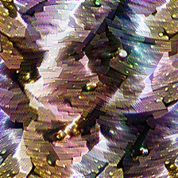
yellow / purple · 136° apart · axis explains 75% of chroma · duotone #4c3a64 → #fad99a
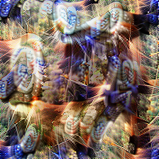
yellow / purple · 135° apart · axis explains 80% of chroma · duotone #383a81 → #ffd395
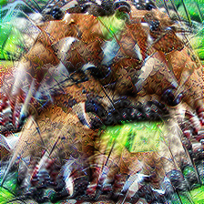
green / purple · 176° apart · axis explains 63% of chroma · duotone #473e56 → #acef79
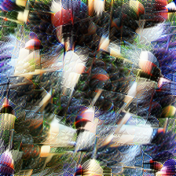
yellow / purple · 161° apart · axis explains 73% of chroma · duotone #3c3c76 → #ebdd9c
green / purple · 177° apart · axis explains 84% of chroma · duotone #373b7f → #d7e497
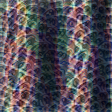
yellow / purple · 150° apart · axis explains 54% of chroma · duotone #3f3b62 → #eddbb8
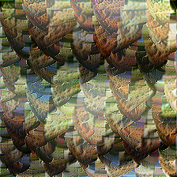
yellow / blue · 159° apart · axis explains 65% of chroma · duotone #3b434b → #e8df9b
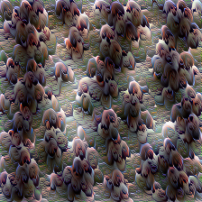
yellow / purple · 158° apart · axis explains 62% of chroma · duotone #493d56 → #dfdec4
yellow / purple · 156° apart · axis explains 75% of chroma · duotone #373d75 → #fbda82
yellow / blue · 167° apart · axis explains 70% of chroma · duotone #2e445b → #ffcd6d
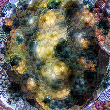
yellow / blue · 164° apart · axis explains 84% of chroma · duotone #36406b → #f4dc8b
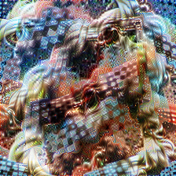
orange / blue · 146° apart · axis explains 76% of chroma · duotone #6d3012 → #b9e0ff
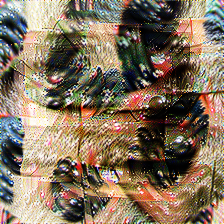
orange / blue · 152° apart · axis explains 68% of chroma · duotone #304458 → #ffc997
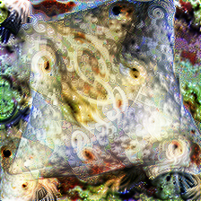
yellow / purple · 168° apart · axis explains 78% of chroma · duotone #3d3f63 → #ebdf8a
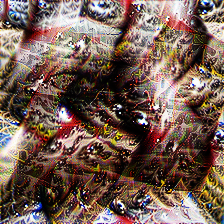
yellow / purple · 137° apart · axis explains 62% of chroma · duotone #613900 → #dbd9fd
yellow / purple · 151° apart · axis explains 64% of chroma · duotone #50366d → #e8df97
orange / blue · 145° apart · axis explains 72% of chroma · duotone #254173 → #ffcb79
orange / blue · 180° apart · axis explains 71% of chroma · duotone #633714 → #b5e3fd
yellow / blue · 157° apart · axis explains 70% of chroma · duotone #3a415a → #ffd589
yellow / blue · 143° apart · axis explains 76% of chroma · duotone #294078 → #ffca64
yellow / purple · 160° apart · axis explains 79% of chroma · duotone #45328c → #e3e09f
yellow / blue · 156° apart · axis explains 69% of chroma · duotone #2e416a → #ffd489
orange / blue · 144° apart · axis explains 66% of chroma · duotone #294075 → #ffd29a
orange / blue · 175° apart · axis explains 73% of chroma · duotone #204755 → #ffc273
yellow / purple · 160° apart · axis explains 64% of chroma · duotone #453f55 → #e9e072
yellow / blue · 154° apart · axis explains 81% of chroma · duotone #34406a → #ffd474
orange / blue · 168° apart · axis explains 61% of chroma · duotone #693402 → #afe3ff
yellow / blue · 153° apart · axis explains 72% of chroma · duotone #28426c → #ffd291
orange / purple · 122° apart · axis explains 70% of chroma · duotone #4a3776 → #ffca71
yellow / purple · 132° apart · axis explains 71% of chroma · duotone #41397b → #fed6ab
orange / blue · 140° apart · axis explains 78% of chroma · duotone #30416b → #ffcd90
green / blue · 130° apart · axis explains 78% of chroma · duotone #0e1016 → #d4e0d5
orange / blue · 137° apart · axis explains 63% of chroma · duotone #264368 → #ffcdaf
orange / blue · 125° apart · axis explains 68% of chroma · duotone #264271 → #ffc7a5
green / blue · 170° apart · axis explains 73% of chroma · duotone #181920 → #d9e0c5
yellow / blue · 149° apart · axis explains 75% of chroma · duotone #234754 → #f9d99e
orange / blue · 151° apart · axis explains 64% of chroma · duotone #32435d → #ffcc8a
green / red · 133° apart · axis explains 58% of chroma · duotone #3b462c → #fbd2e2
yellow / cyan · 95° apart · axis explains 63% of chroma · duotone #3a4444 → #ecdf7b
green / purple · 168° apart · axis explains 74% of chroma · duotone #473d5f → #dce1b2
orange / purple · 136° apart · axis explains 60% of chroma · duotone #393f68 → #ffce8f
green / blue · 170° apart · axis explains 65% of chroma · duotone #374066 → #d5e4a1
green / blue · 140° apart · axis explains 79% of chroma · duotone #36472b → #c3dfff
yellow / purple · 141° apart · axis explains 76% of chroma · duotone #3e324c → #f2dba3
yellow / purple · 140° apart · axis explains 80% of chroma · duotone #383e72 → #ffd6a9
orange / purple · 127° apart · axis explains 62% of chroma · duotone #3b3f66 → #ffd3b5
orange / blue · 129° apart · axis explains 59% of chroma · duotone #693413 → #d3dbff
yellow / cyan · 152° apart · axis explains 74% of chroma · duotone #2c464e → #ffd48f
orange / purple · 136° apart · axis explains 89% of chroma · duotone #404055 → #ffd096
yellow / blue · 171° apart · axis explains 70% of chroma · duotone #2b4557 → #ffd572
yellow / purple · 153° apart · axis explains 59% of chroma · duotone #223c8a → #ffd88a
yellow / purple · 140° apart · axis explains 73% of chroma · duotone #333a85 → #ffd27f
yellow / purple · 170° apart · axis explains 77% of chroma · duotone #313b84 → #e3e095
yellow / purple · 144° apart · axis explains 79% of chroma · duotone #383986 → #ffd67d
yellow / purple · 172° apart · axis explains 65% of chroma · duotone #363986 → #dee28f
yellow / purple · 153° apart · axis explains 75% of chroma · duotone #363987 → #f5db93
yellow / blue · 159° apart · axis explains 78% of chroma · duotone #203f7f → #ffd880
yellow / purple · 153° apart · axis explains 67% of chroma · duotone #4c3577 → #e9df94